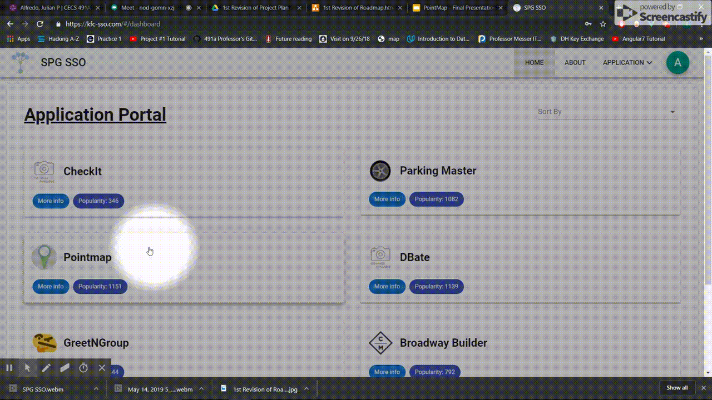
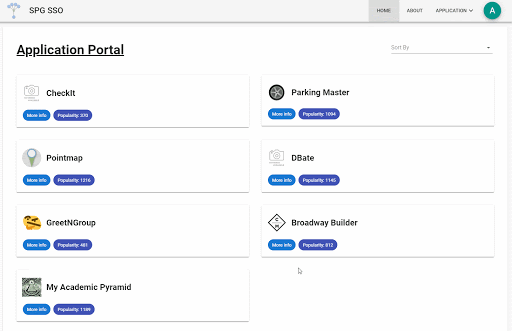
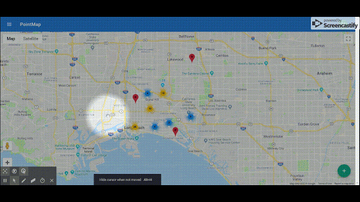

<div class="container-page">
    <div class="container-main">
      <div class="animated fadeIn mb-4">
        <h1 class="h1-title">PointMap</h1>
        <div class="container-content">
          <h2>Purpose</h2>
          <p class="p-section">PointMap is a geospatial location mapping tool.
            It allows the user to create and manage various geospatial points over a large area. This application was built
          as part of my seinor project course where teams were formed to build out individual applications along with a class
          project of a Single Sign On application where the individual projects were hosted on. This project was developed
          using Scrum.
          </p>
          <h2>Frameworks</h2>
          <ul class="ul-frameworks">
            <li>
              The backend of this projcet was written in ASP .Net Framework using MVC architecture, SQL Server and Entity Framework.
            </li>
            <li>
              The Fronend of this application was written in VueJS.
            </li>
            <li>
              The logging server was done using Node-Express framework, GraphQL and MongoDB.
            </li>
          </ul>
          <h2>RoadMap</h2>
          <p class="p-section">The following is a roadmap of our project, showing the feature development breakdown.</p>
          
        </div>
        <div id="container-applaunch" class="container-section">
          <h2>SSO Registration and Application Launch</h2>
          <br>
          <p id="p-applaunch" class="p-section">
            
            The individual application are registered to the SSO by a shared secret generated by an administrator account.
            Any SSO user may launch the individual application, but application administrators are given different priviliges
            than a normal user.
          </p>
          <p class="p-section">
            The animation to the right shows the launch of the pointmap application from the SSO portal. All launches
            from the SSO to the application are authenticated, along with every non-public route.
          </p>
        </div>
        <div id="container-logging" class="container-section">
          <h2>Logging and Archiving</h2>
          <br>
          <p id="p-logging" class="p-section">
            
            The application logs both analytical and error information generated by PointMap. Examples of analytical data
            are User Logins, User session duration, each page visited, page visit length, etc. All log requests are transmitted
            from the backend to the logging server where they are stored in the appropriate MongoDB collection after the request is
            authenticated.
          </p>
          <p class="p-section">
            An application administrator has an Analytics feature, which sends a request for information from the logging server.
            Using GraphQL the logging server preforms several queries of the logged collection and returns the result. This result
            is then parsed and displayed on the Analytics page.
          </p>
        </div>
        <div id="container-mapview" class="container-section">
          <h2>Map View</h2>
          <br>
          <p id="p-mapview" class="p-section">
            
            MapView serves as the home page for a normal user and the gateway to the other features the
            application provdies. MapView utilizes Google Maps API to allow users to view and cluster points. MapView
            uses Google's Geotracking API to autocenter to the user location and then a function is called to retrieve
            all points in the users viewport.
          </p>
        </div>
        <div id="container-pointeditor" class="container-section">
          <h2>Point Editor and Point Details</h2>
          <br>
          <p id="p-pointeditor" class="p-section">
            
            While in MapView users may select a specific point to view stored information on that point. This information
            is retrieved through a Backend request and an EF query. While in the Point Details feature the user may choose
            to delete or edit the existing point.
          </p>
          <p class="p-section">
            Editing a point brings up the Point Editor feature of the application which allows the user to adjust the
            placement, name and description of the point.
          </p>
        </div>
        <div class="container-end">
          <h2>Documentation</h2>
          <p class="p-github">
            To navigate to the public documentation route of the application click
            <a target="_blank" href="https://pointmap.net/#/documents">here!</a>
          </p>
          <p class="p-github">Or check out the github organization! <a target="_blank" href="https://github.com/ChrisMeyer7088/ChrisMeyerSite">
            Repository
            <mdb-icon fab icon="github"></mdb-icon>
            </a>
          </p>
        </div>
      </div>
    </div>
  </div>
